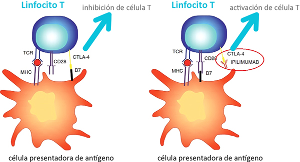
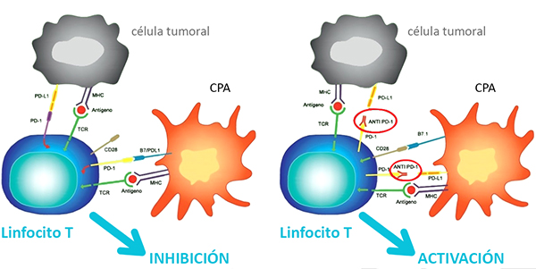
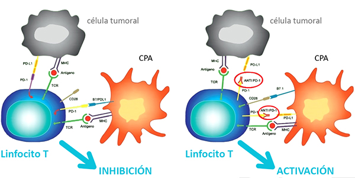

ICO 24h
MÓDULO 5 : Urgencias relacionadas con la inmunoterapia oncológica
-
Puntos de control inmunitario :
Existen numerosas proteínas que intervienen en los diferentes pasos del ciclo cáncer-inmunidad que regulan la interacción entre el proceso neoplásico y el sistema inmunitario. Estas actúan en los llamados puntos de control inmunitario, de los cuales los dos más relevantes son puntos de control negativo, cuyo efecto final es suprimir la respuesta inmunitaria antitumoral. -
Fármacos inmunomoduladores :
La mayoría de los fármacos aprobados en la actualidad y utilizados en la práctica clínica diaria son anticuerpos monoclonales que se administran por vía endovenosa y cuya acción se dirige a inhibir la interacción de Cytotoxic T-Lymphocyte Antigen 4 (CTLA-4) con sus ligandos y de Programmed death 1 (PD1) con Programmed death-ligand 1 (PD-L1). Por lo tanto, lo que se consigue es eliminar la inhibición y reactivar la respuesta inmunitaria (analogía con quitar el pie del freno del coche).
Los agentes más utilizados, tanto en esquemas de tratamiento asistencial ya aprobados como en protocolos experimentales de ensayos clínicos, son:
- Ipilimumab y Tremelimumab bloquean la interacción de CTLA-4 con B7.1/2, reactivando la fase de cebado y activación de los linfocitos en el ganglio linfático.
- Nivolumab, Pembrolizumab, Atezolizumab, Durvalumab y Avelumab bloquean la interacción de PD-1 con PD-L1, reactivando la fase efectora citotóxica en el lecho tumoral.


